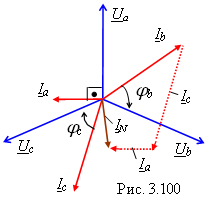

2.9.2.5. —оотношени€ между линейными и фазными напр€жени€ми и токами в трЄхфазной системе Y-Y с нейтральным проводом при неравномерной нагрузке
|
¬ четырЄхпроводной системе при неравномерной нагрузке, в которой комплексные сопротивлени€ фаз Za ≠ Zb ≠ Zc (например, Za = -jXa, Zb = Rb - jXb и Zc = Rc - jXc), фазные напр€жени€ приЄмника равны соответствующим фазным напр€жени€м генератора, т. е.  Ua = UA, Ub = UB, Uc = UC, а фазные токи различны и равны:
|
|||